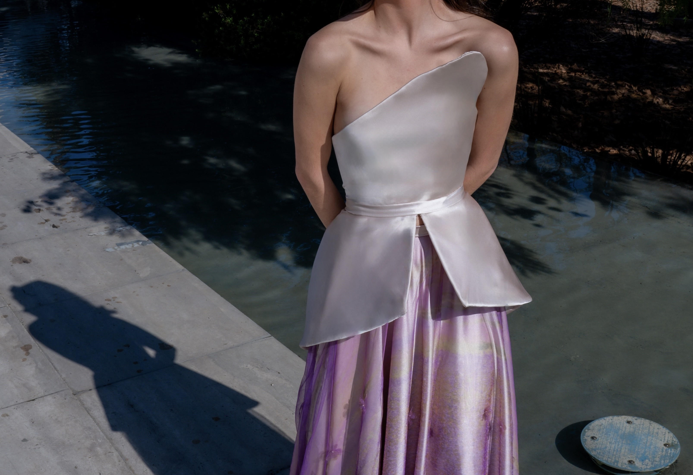

RESPLANDOR DEL DESIERTO
MARZO - JULIO 2024
Taller de moda y gestion IV - alta costura
Pieza de alta costura donde tomamos como referencia la casa de alta costura Dior con un enfoque latinoamericano. De las icónicas flores de Dior quise llevar la textura de mi propuesta a lo local, centrándome en el maravilloso desierto florido, donde desde este desierto árido y seco nacen estas flores y vuelve a renacer el lugar. La parte superior con un color arenoso como el desierto nace esta falda amplia que encarna la belleza del desierto florido a través de técnicas innovadoras como la sublimación en tul con flores bordadas que fueron cortadas a través de láser.

